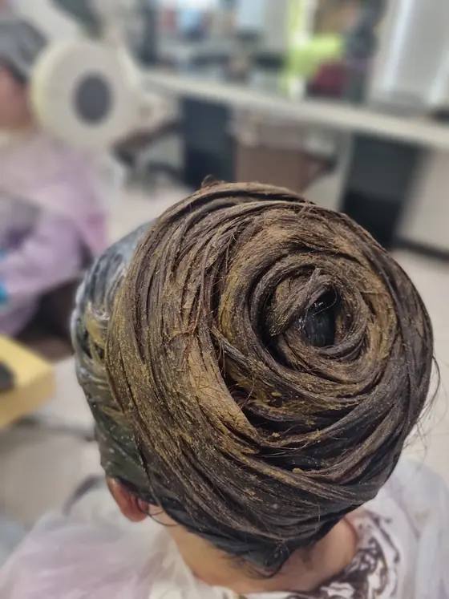
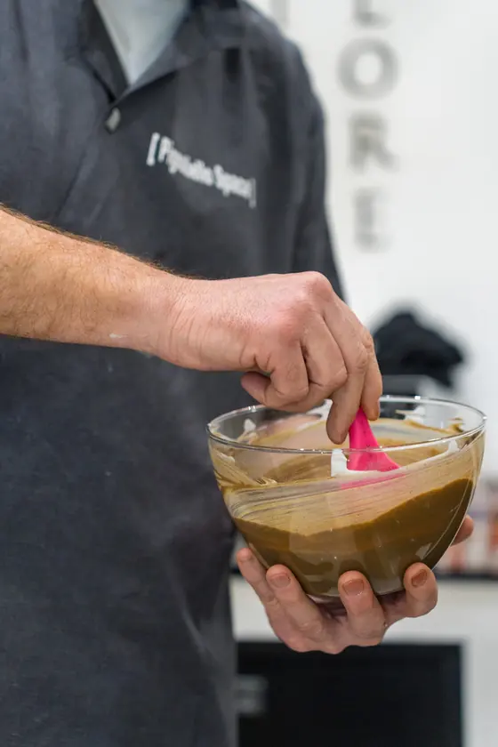

Le 3 foto che Pignatiello Bio space parrucchieri ha caricato sulla sua scheda Google.
Foto 1 di 3

Foto 2 di 3

Foto 3 di 3
Recensioni
Cosa dicono i clienti
4,8 su 5 · 204 recensioni su Google. Qui sotto alcune, riportate senza modifiche (i nomi sono abbreviati).
★★★★★
Esperienza meravigliosa! Finalmente un parrucchiere che ama davvero i capelli e l'ambiente. I trattamenti con prodotti naturali che hanno utilizzato sono eccezionali: i miei capelli sono letteralmente rinati, super luminosi e sani fin dalla prima seduta. Atmosfera rilassante, grande competenza e una cura del dettaglio impeccabile. Diventerà sicuramente il mio salone di fiducia!
★★★★★
Oggi ho effettuato taglio e colorazione con erbe naturali per la prima volta da Piagnatiello bio space e sono certa di ritornare! è stata un' ottima esperienza, risultato perfetto, i capelli lucenti e nutriti più di quanto potessi immaginare. L' ambiente è accogliente e pulitissimo ma la vera forza è il personale: persone eccezionali, amano il loro lavoro e forniscono spiegazioni e suggerimenti utilissimi per trattare con cura i capelli, oltre all' attenzione per le materie prime e al rispetto dell' ambiente (zero plastica, niente sprechi). Felice di aver conosciuto questa realtà, non vedo l'ora di sperimentare i loro prodotti (realizzati sempre con erbe e olio essenziali e acquistabili in negozio). Complimenti per tutto!🤩
★★★★★
Oggi per la prima volta ho scelto di provare le erbe tintorie🍀❤️ Il risultato é splendido. Ho trovato un posto meraviglioso dove ricevere attenzioni, dolcezza e grande professionalità. Tutti splendidi, simpatici, ed altamente attenti. Sicuramente ci ritornerò per la cura verso i miei capelli. Grazie🙏🏿☀️
★★★★★
Dopo anni di colorazioni e trattamenti chimici sui miei capelli, fragili, sottili e pochi per genetica, ho finalmente trovato il posto giusto. La competenza nell’utilizzo di mix di erbe tintorie e altri ingredienti naturali sono stati la svolta per associare cura e bellezza. I capelli bianchi si coprono benissimo, le sfumature di colore sono ampie e Giancarlo è preparato e disponibile a qualunque richiesta. Tutto lo staff è competente, attento, discreto e disponibile. Una menzione speciale a Stefania, una donna che coccola in tutto il percorso con la sua forza e dolcezza, ma soprattutto con la sua professionalità. Grazie ✨❤️
★★★★★
Sono entrata da Pignatiello Space con il cuore in gola. In passato ho avuto una pessima esperienza con altri parrucchieri: mi hanno letteralmente bruciato i capelli, spezzandoli e trasformando un taglio medio-lungo in un taglio cortissimo. Capirete quindi la paura. Ma questi ragazzi… sono dei veri maghi. Probabilmente hanno studiato a Hogwarts! 🪄 Con una professionalità incredibile sono riusciti a ripristinare il colore e la salute dei miei capelli, utilizzando trattamenti alle erbe super naturali. In più hanno fatto pochissimi colpi di sole, con un trattamento delicatissimo che non stressa assolutamente il capello. Il risultato? Capelli vivaci, brillanti, morbidi, sani come quelli di una bambina di 8 anni. Non potevo credere ai miei occhi (e alle mie mani!). Grazie mille davvero, mi avete restituito fiducia e sorriso. Tornerò sicuramente! ❤️✂️